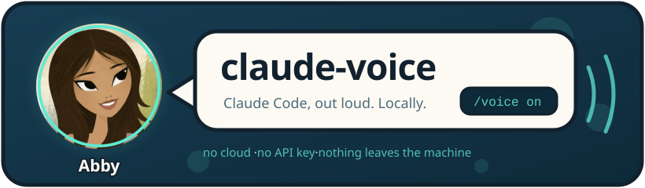
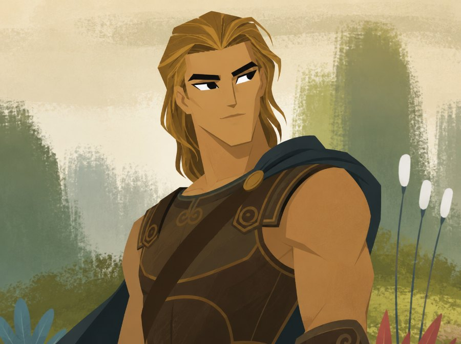
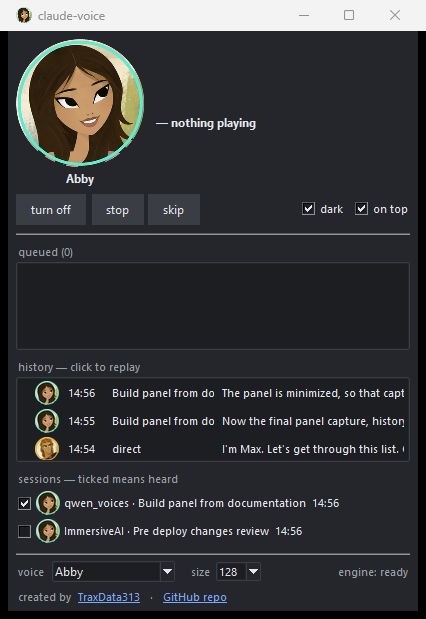

Both ship with the repo, and both are spoken entirely on your own machine — no cloud, no API key, nothing leaving the computer.
Cute, slightly nerdy, young and warm. Calm, never in a hurry — for careful work, tricky debugging, and being talked through something gently.

Brave and driving, a trainer's energy. Punchy lines, counts off what is done, pushes for one more — for grinding through a long list.
English and Russian are tested, and both sound right — Russian included, though both voices were cloned from English. 🌐 Most widely used languages should read normally too: the model underneath is multilingual, and nothing in between cares which alphabet it is handed. A less widely spoken one may be taken for its bigger neighbour, though — Bulgarian comes out fluent but in a Russian accent. Write a line in one and listen.
Windows only. Paste this into Claude Code:
Clone https://github.com/TraxData313/claude-voice here, then follow docs/tour.md in it: set it up, turn it on, and give me the spoken tour.
That is the whole of it. Claude fetches Python if you lack it, then the engine and its model, installs, opens the panel and switches it on — then tells you out loud how to drive it. Ten minutes, nearly all of it download — about 3 GB of engine and model, which resumes where it stopped if the connection drops.
No administrator rights anywhere, so it goes on a locked-down work laptop as easily as your own. By hand, other builds, every-project install →
What it wants: Windows, an NVIDIA card, and about 3 GB of disk for the engine and the model. No administrator rights at any point, and nothing to sign up for. Roughly 4 GB of video memory should do it — that one is an estimate rather than a measurement, and the repository says plainly why.
These pages exist because GitHub will not play audio inside a README — it offers the file for download instead. Everything else about the project lives in the repository.
